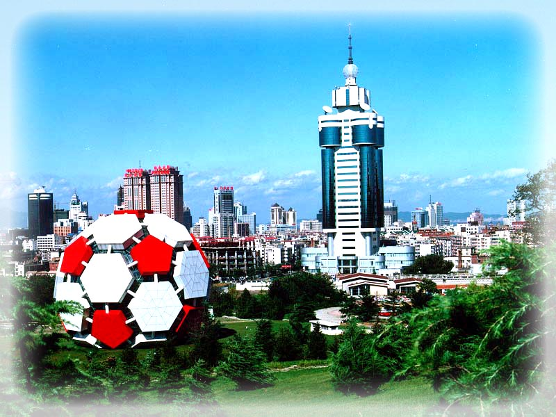
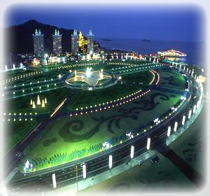
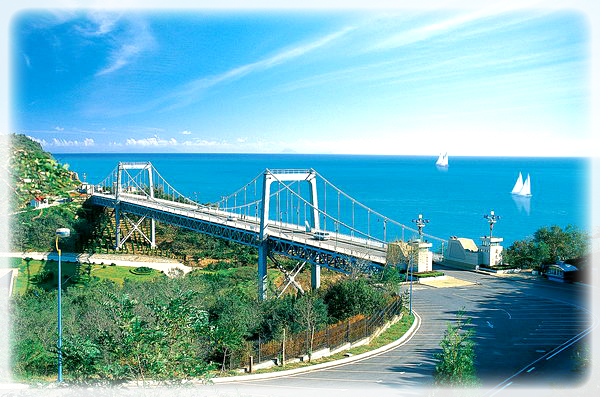
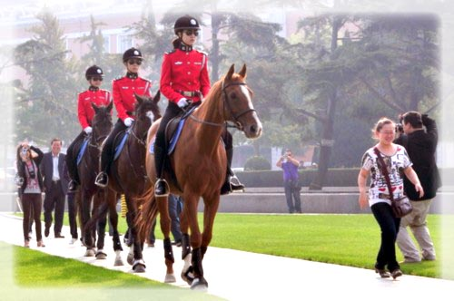
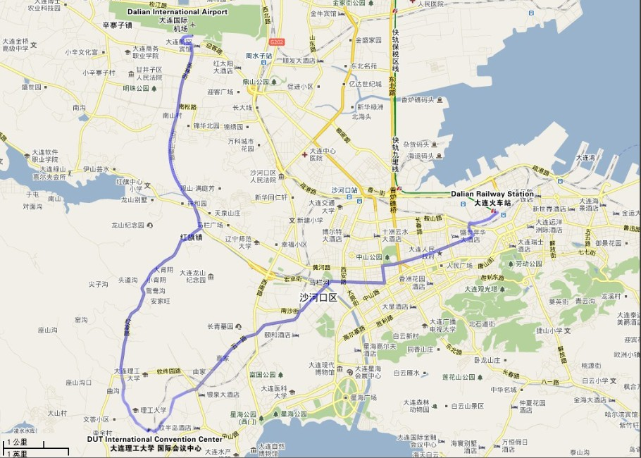
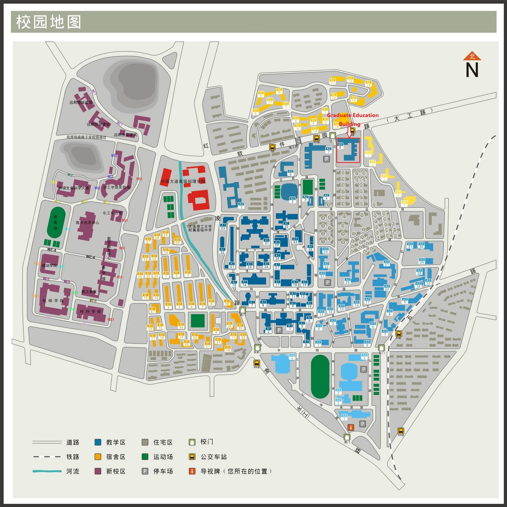
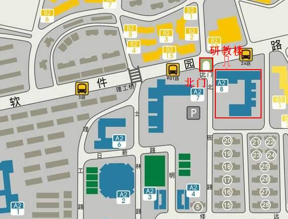

Conference Venue
The conference will be held at the Library of Dalian University Of Technology. The Dalian University Of Technology Library is situated in Dalian which called "north bright pearl " . The hotel is only 12 kilometers from the airport and within 10 kilometers to the railway station.
Dalian is a city where you can find natural scenes of stunning beauty, amiable climate, stylish architecture, comfortable beaches and summer tourist resorts. The gardens and circuses everywhere are good decorations of the city. Star sea square is the largest square of Asia. Along the southern coast, a road like a jade ribbon runs among the mountains and along the sea, threading through the scenic spots of Bangchui Island, Tiger Beach, Fujia Village, Baiyunshan Park. There are some other famous spots such as inscriptions beach, ice bath dyke, Lüshunkou, and polar region embassy. Dalian is the first city which has the Female mounted policeman in China. If you want to see them, you can go to people's square, 9-10:30 Am.
Address: No.2 Linggong Road, Ganjingzi District, Dalian City, Liaoning Province, P. R. C., 116024
Conference Location: Graduate Education Building room 203
会场：大连理工大学（本部）北门研教楼203室
  


